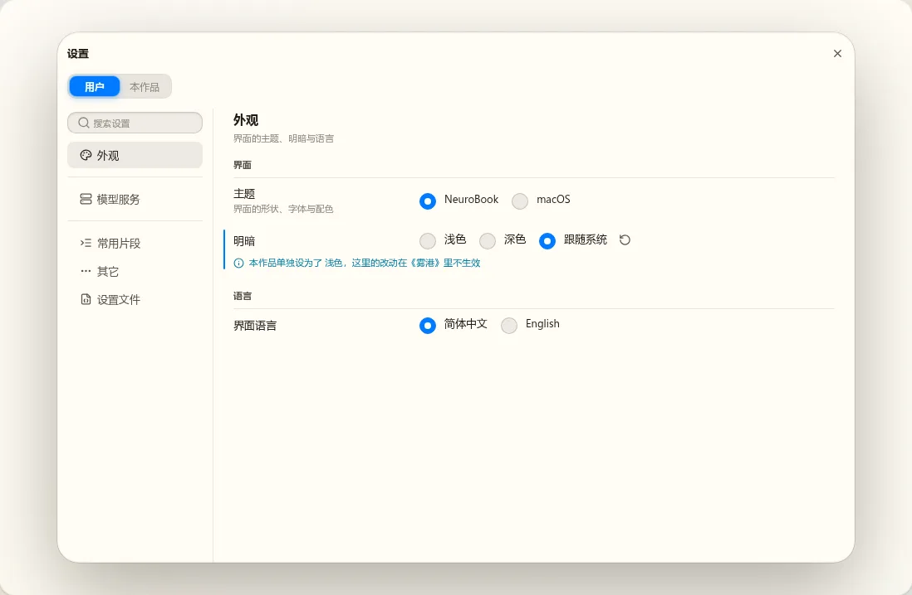
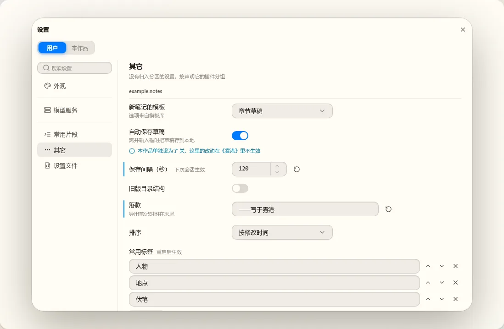
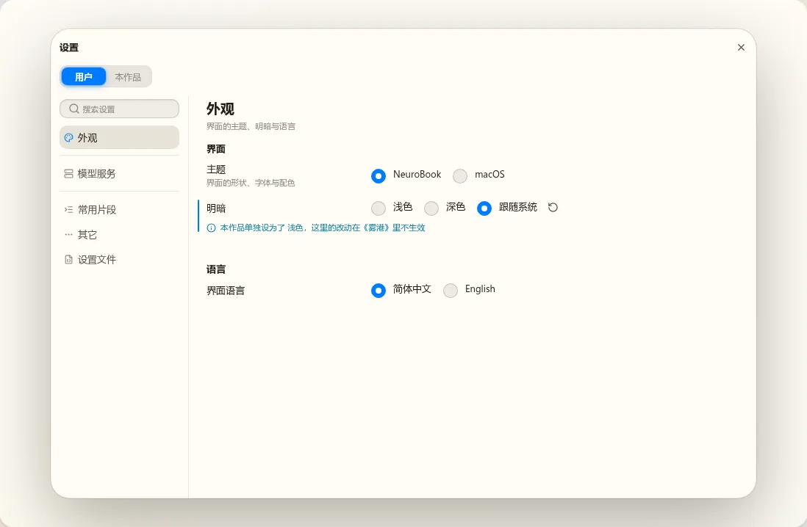
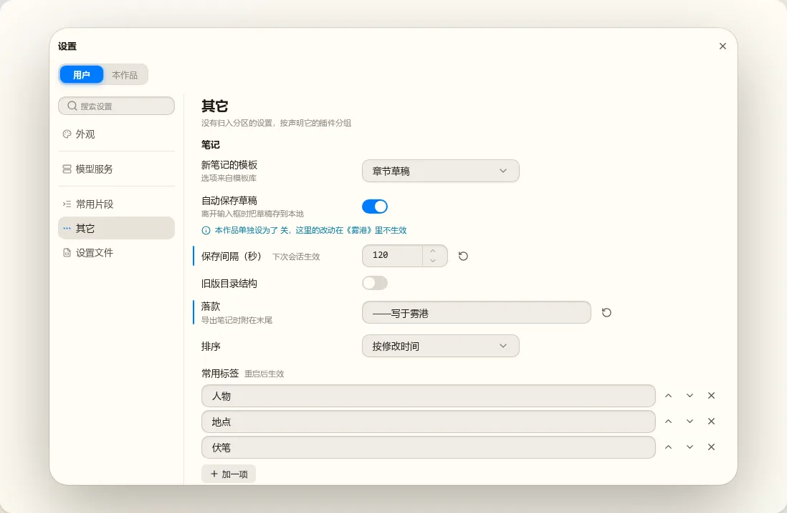

t06 设置界面外观评审板
w00027 t06（设置界面的样式收口），2026-10-21 起。待定的问题放最上面，现状与参照在最后。截图取自 Work 分支 feat/w00027-plugin-platform（t02 合入后）的 Component Lab，画布 1200×800。点图看原图。
第一轮：窗口框架（2026-10-21）
静态稿用 nb-ui 的真实控件搭成，数据写死，窗口 960×640，NeuroBook 主题浅色。注意力排序已定：先看每项的标题与当前值，其次是改过、恢复默认、本作品覆盖，说明与生效时机放轻，左栏比内容轻。
两题共同的改动：新画法里左栏选中项只给浅底色与正文色、图标用强调色，不再是按钮底加描边（现状打开窗口时键盘焦点落在选中项上，还会多一圈焦点环）；“其它”的小组标题换成给人看的名字（“笔记”），不显示插件 id。
待定 1. 内容区的小组怎么画
同一个分区画三种。左图“外观”只有简单控件，右图“其它”有下拉、开关、数字、输入框和一个列表。
A. 现状：小组标题加分隔线


B. 分组底板：每个小组一块底板，行间细线
C. 不画线：靠字号与留白分层


推荐 B。设置窗口 960 宽，标题在左、控件在右，中间隔着两百多像素，眼睛要横着找。行间的细线把每一项的标题和控件框在一起，底板把一个小组框在一起，扫一遍就知道一组有几项，这也是 macOS 系统设置的画法。已修改的竖线贴在底板的左边缘，不再悬在留白里。代价：高度比现状多一点（“其它”多约 40px）；浅色下底板与输入框的底色接近，选 B 的话下一轮要把底板上的控件底色调开；page 分区（模型服务、常用片段）要跟着用同样的底板，第三轮一起出稿。C 最轻，但行与行之间没有边界，长分区里标题和控件的对应要靠对齐来猜。
待定 2. “用户 | 本作品”放在哪
三张图的内容区都用 B 画法，只换层标签的位置。


推荐 C。层标签管的是整个窗口：切到“本作品”后，左栏每个分区都写进这本作品，放在标题栏正中正好说明它管全窗口；还省出现状那一整行（约 44px），内容和左栏都往上提。B 挨着分区标题，容易读成“只管这一个分区”。没有绑定作品时（书架上打开）三种都不画层标签，C 的标题栏只剩“设置”和关闭。
1. 现状


example.notes；单行输入定宽 320、下拉 220、数字 120，右边缘参差；字符串列表另起一行占满。


2. 与 t80 定稿的差别、t80 之后新增的界面
| 位置 | 现在 | 来源 |
|---|---|---|
| 三项以内的选项 | 横排单选组；t80 稿是分段控件 | t07 S5 按 nb-ui 的“同类零件的分工”改，当时说外观交给 t06 |
| 左栏顶部搜索框、底部“设置文件” | 与分区同宽的搜索框；分区列表最后固定一项 | t02 S4、S5，没有出稿 |
| 左栏选中项 | 键盘焦点留在选中项上时，底色和 2px 焦点环同时出现，比稿子重 | 实现 |
| 分区标题与小组标题 | 18px 粗体与 12px 粗体，差距大；分区说明和第一个小组挤在一起 | 实现 |
| “其它”的小组标题 | 插件 id，不是给用户看的名字 | 实现 |
| 动态选项的“已不存在”、不可用 | 框里与框下各写一次“已不存在”；不可用时给出来源 id | t02 S3，nb-form 的通用写法 |
| 设置文件、确认框、模型服务 | 见上面的图 | t02 S4、S5、S7，没有出稿 |
3. 参照：w00017 t80 的定稿
t80 评审板（r1–r4）里定下的结构现在基本照做了：浮动窗口 960×640、左栏分区、“用户 | 本作品”、标签列加控件列、宽控件另起一行。nbdev 里与设置有关的产物只有 t02 的 settings-sections（讲两种分区的画法，不是外观稿）；t80 的评审板早于 nbdev 的发布机制，不在 nbdev 里，原板在这里。


4. 已记下要一并收口的
- 只读与可编辑看不出差别（开关、单选、下拉、文字逐像素相同），要一种统一的只读外观，不用变淡（变淡是停用）。来源 t07 S3 界面审查第 7 条。
- 单行输入定宽 320，内容列窄时整行换到标题下面，同一分区两种对齐混在一起；“恢复默认”在窄宽度单独一行。来源 t07 S5 界面审查第 8 条。
- “模型服务”的服务商列表与详情要各自滚动，需要 nb-form 的左列表右详情能撑满父容器。来源 t02 界面审查第 6 条。
- fill 与 column 两份分区标题与层说明的模板，抽成一个组件（实现层面，不影响外观）。来源 t02 界面审查第 17 条。